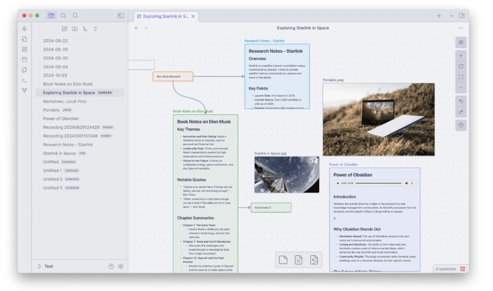

Use our application to make notes and score higher in your next exam.

Equiping 5000000+ Students with best resources in 40+ countries
Students report that CodeAlt-Notes Helps them
0%
Feel more engaged in the classroom.
0%
Achieved better results
0%
Stay better organized
Sophia Gomez
"Before using CodeAlt-Notes, my study routine was a complete mess. I'd lose notes, forget what to revise, and feel overwhelmed before exams. But now? Everything's in one place — I feel organized, focused, and actually excited to study! Scored my highest marks ever last semester. Can't recommend this app enough!"
Anish Thapa
"I used to carry multiple notebooks and still forget what to study. With CodeAlt-Notes, I’ve gone fully digital — my notes are organized, searchable, and accessible from anywhere. The design is simple but powerful. It’s like having a personal study assistant in my pocket!"
Xin chan cho
"As someone who always struggled to keep my notes in one place, CodeAlt-Notes was a total game-changer. I love the clean interface, and the fact that I can quickly jot down ideas during class and organize them later is a blessing. Honestly, I can't imagine studying without it anymore!"